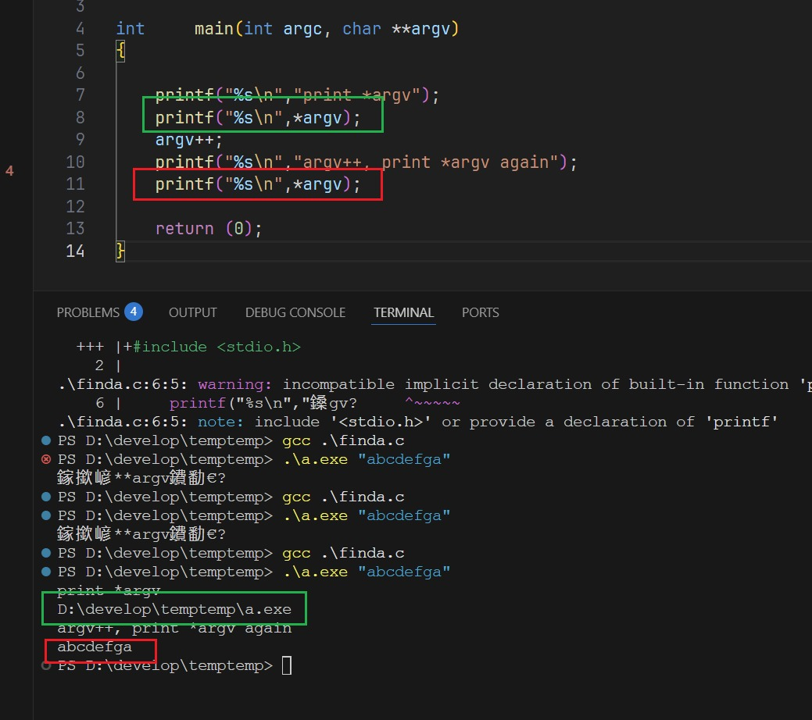

C语言main函数传参与指针操作
Assignment name : aff_a Expected files : aff_a.c
Allowed functions: write
Write a program that takes a string, and displays the first ‘a’ character it encounters in it, followed by a newline. If there are no ‘a’ characters in the string, the program just writes a newline. If the number of parameters is not 1, the program displays ‘a’ followed by a newline.
#include <unistd.h>
int main(int argc, char **argv)
{
if (argc != 2)
write(1, "a", 1);
else
{
while (*argv[1])
{
if (*argv[1] == 'a')
{
write(1, "a", 1);
break;
}
argv[1]++;
}
}
write(1, "\n", 1);
return (0);
}
int argc 和 char **argv 是 main 函数的命令行参数。
int argc (argument count):
表示程序运行时传入的参数个数
包括程序名称本身
程序名称算作第一个参数，所以 argc 最小值是 1
char **argv (argument vector):
是一个指向字符串数组的指针
存储所有的命令行参数
argv[0] 是程序名称
argv[1] 是第一个参数
argv[2] 是第二个参数，以此类推
argv[argc] 是 NULL
char **argv，假设我们传入的参数为hello
argv指向一个指针数组，也就是数组里面的元素都是指针。（这个例子里就是字符串指针，分别指向程序名和hello）
argv里的每一项，也就是argv[i],就是指向具体字符串的指针,比如argv[1]就指向了hello
对于argv[1]来说，既然它是一个指向字符串的指针，那么*argv[1],它的初始值就是‘h’,。
此时，如果移动argv[1]的指针，也就是argv[1]++，那么指针就移动到了e的位置，值就是‘e’
如果用你上面的二维数组来解释，也可以。那既然argv[1]是指向这个字符串，那么显然，argv[1][0]，就是字符串里的第一个字符，也即是*argv[1]，两者一样。一个是指针解释，一个是数组解释。
理解到这里我觉得就行了，我再做一些测试。
 argv[i]，其实也能用*argv来表示（注意，后面没有中括号）；只不过，因为我们只需要argv[1]，因此就没有必要去挨个移动大指针，而是直接去取argv[1]就可以了。可以看我的代码。
argv++之后，*argv = argv[1] = 传入的字符串hello
而*argv1，自然就是字符h，argv[1]++，*argv1就是字符e。
换言之，argv++之后
既然*argv=argv[1]=hello，那么**argv = argv[1] = h
就是这样两层关系。
并且我自己手写了一个函数，用str来做参数，还原了一样的效果。
实际上，int test2(char str)，其实，就表示str是个二维数组
第一维度移动指针，就是在不同的字符串上移动；
第二维度移动指针，就是在某个字符串上的字符上移动。
第一维度的指针具有优先性，当你大指针移动到数组的第二个元素时，那么此时的小指针，也必须移动到第二个字符串上。
换言之，str[0][0]，表示第一个字符串的第二个字符，如果你移动大指针，变成str[1][0]，那此时小指针只能'跟着它动，取到第二个字符串[0]。